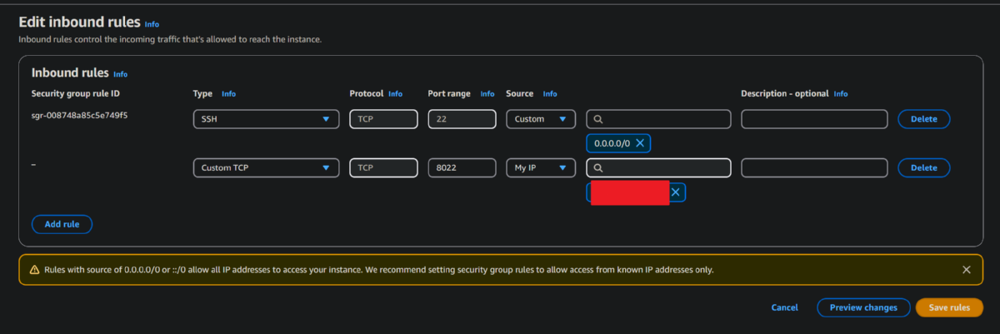
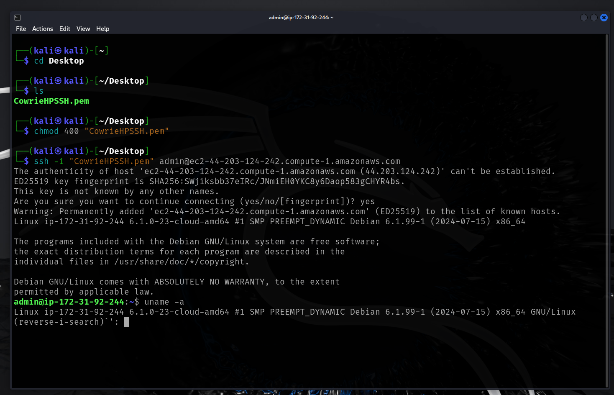

AWS - Setup Honeypot For SIEM Analysis
AWS - Setup Honeypot For SIEM Analysis
Keith Brady 1/10/25

Goal
With my background in cybersecurity, I am continuously seeking opportunities to work with real-world threat data to enhance my analytical skills and experiment with emerging security tools. For this project, I have chosen to explore deception technology by deploying a honeypot in AWS. A honeypot is a decoy system designed to attract adversaries, diverting them away from actual assets while gathering valuable threat intelligence. The data collected from these interactions can provide critical insights for improving detection capabilities, refining defense strategies, and staying ahead of evolving attack patterns.
What is a Honeypot?
A honeypot is a cybersecurity tool designed to act as a decoy system that attracts and detects potential attackers. It appears to be a legitimate part of the network but is actually an isolated system used to monitor, analyze, and learn about attack patterns and methods used by malicious actors.
Key characteristics of honeypots:
- Simulates vulnerable systems to lure attackers
- Monitors and logs all interaction attempts
- Helps identify new attack vectors and threats
- Provides valuable data for security analysis
Why Deploy a Honeypot on AWS?
Deploying a honeypot on AWS offers several advantages:
- Can be placed within your organizations internal/external/DMZ networks to monitor suspicious activity
- Scalability: AWS provides flexible resources to scale your honeypot based on monitoring needs
- Cost-effective: Pay only for the resources you use during the deployment
- Isolation: Easy to isolate the honeypot from your production environment for safety
- Global reach: AWS's worldwide infrastructure allows you to detect threats from different geographic locations
- Integration: Seamlessly connects with other AWS security services and logging tools
Type of Honey Pot
We are going to use a medium interaction honeypot, Cowrie. This type of honeypot will emulate a set of servies and protocols (SSH and Telnet) to capture mallicous traffic and actions. Cowrie is also less resource intense than other types of high interaction honeypots that are available.
The Build
1. Log into AWS Console and create a new instance.
- Create new t2micro (free) instance with 16GB of storage.
- Allow SSH from everywhere. We will later change our SSH from 22 to 8022 for access and keep the standard port open from maicious traffic.
- Create a new Key Pair for our access. Save the .pem file to your local machine or somewhere easy for you to access.
- Modify the security group inboundn rules to allow access to port 8022 only from your home (8022 is a common alternative from standard ports).

2. Connect to instance using SSH, install dependancies, modify default SSH listen port (22<-->8022) and install Cowrie honeypot.
- Use your distro of choice to download the .pem file created for the Cowrie instance, chmod 400 the file and connect to the instance on AWS.

- Once connected, run the following for updates and dependancies:
sudo apt-get update && sudo apt-get upgrade -y
sudo apt-get install lnav git python3-virtualenv libssl-dev libffi-dev build-essential libpython3-dev authbind -y
sudo apt-get install lnav git python3-virtualenv libssl-dev libffi-dev build-essential libpython3-dev authbind -y
- Change the SSH daemon default port to 8022 in /etc/ssh/sshd_config. This will allow us to connect to the real SSH server and keep the fake Cowrie port 22 service open for attackers.
- Now, restart ssh daemon for it to take effect.
sudo systemctl restart ssh
- Reconnect back to the Cowrie instance using SSH via the new port 8022 using the -p flag.
3. Install Cowrie.
- Create new user for Cowrie services and then su into that user.
- Clone the Cowrie repo and create a new python virtualenv.
- Upgrade pip and install repo using requirements.txt.
- Change the Cowrie hostname to something different (so attackers dont easily know its a Cowrie instance). Then exit the virtualenv.
- Modify the iptables routing for port 22 to 2222 (SSH) and port 23 to 2223 to be logged by Cowrie.
- Now we run cowerie and wait....
Check that Cowrie is running and that logs are generating hits/attacks.
4. Run instance for sometime to gather attack metrics. Once metrics are gathered, will will use Splunk and some other tools to analyze what we found/caught.
Links
Honeypot (computing)
How to detect suspicious activity in your AWS account by using private decoy resources
Cowrie Honeypot GitHub
© phrohike.github.io. All rights reserved.